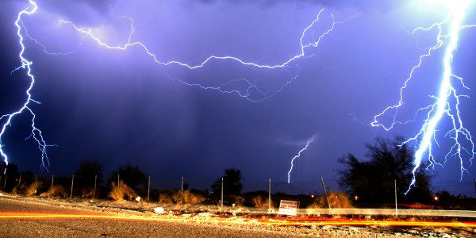

O que é uma fonte de Alta Tensão?

Fonte de alta tensão é um dispositivo que tem em sua entrada a tensão em níveis convencionais e na sua saída fornece alta tensão. Na sequência, damos continuidade ao tema ALTA TENSÃO.
O que é Alta Tensão?
A definição do que é Alta Tensão é relativa. Tensão acima de 60V já causa perigo ao ser humano. Pela definição da norma NR-10 brasileira, no entanto, é considerada alta tensão quando esta for superior à 1000V.
A alta tensão está presente na natureza e sua forma mais evidente é o raio elétrico. No cotidiano, fontes e equipamentos que utilizam alta tensão estão muito próximos de nós, mas frequentemente não nos damos conta disso. Exemplo disso são os fornos de micro-ondas e a rede de distribuição elétrica. Até bem pouco tempo atrás, os televisores e monitores de computador que utilizam o cinescópio (ou CRT) estavam em todos os lugares também. Esses equipamentos também utilizam a alta tensão em seu princípio de funcionamento.
Saindo do ambiente doméstico, vários outros equipamentos utilizam alta tensão, como máquinas de raio-X (médico, dental, verificação de bagagem no aeroporto), máquinas de corte e marcação Laser, equipamentos de telecomunicações (enlaces de micro-ondas), etc…
O desenvolvimento de fontes de alta tensão teve impulso na Segunda Guerra Mundial, no desenvolvimento dos radares que ajudaram os aliados a ganhar a guerra (http://guerra1940.blogspot.com.br/2012/06/radar-salvou-gra-bretanha-em-1940.html).
Diferença entre Corrente Alternada (CA) e Corrente Contínua (CC)
Entender ou visualizar a “Tensão Elétrica” não é uma tarefa simples. Acredito ser mais fácil entender a “Corrente Elétrica”, que é, simplesmente, ter cargas elétricas em movimento dentro de algum elemento, como por exemplo, um fio de cobre.
Para a corrente contínua (CC), as cargas elétricas (que em geral são elétrons) sempre vão na mesma direção e acabam passando no mesmo ponto várias vezes, porque fecham o circuito elétrico. Para a corrente alternada (CA), os elétrons ficam num movimento de vai-e-vem permanente, ficando em média no mesmo lugar.
Como gerar Alta Tensão
A geração de alta tensão em Corrente Alternada parece ser mais fácil do que em Corrente Contínua porque basta um transformador. A geração em Corrente Contínua pode ser feita adicionando um circuito retificador na saída de alta tensão de um transformador ou ainda com circuitos multiplicadores de tensão.
Embora o princípio de funcionamento da geração de alta tensão seja simples, a elaboração de uma fonte confiável e segura requer conhecimentos mais avançados do que eletrônica básica e de circuitos elétricos, porque aparecem outros fenômenos que são explicados e entendidos somente com o domínio do Eletromagnetismo, como o efeito Corona, rompimento de dielétricos e a geração de plasma.